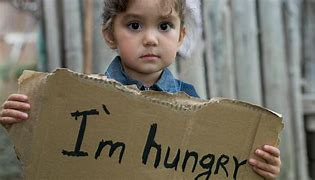
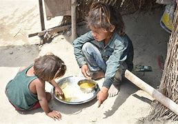
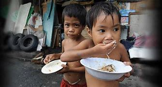

At FEED THE FUTURE, our objective is to provide hot and well-balanced meals to those in poverty within Cape Town communities. We aim to decrease the number of people starving and without access to food. To achieve this, we seek donations in the form of food or monetary contributions, which will help us provide suitable meals to those in dire need.

Objectives of FEED THE FUTURE
- Protecting children from malnutrition.
- Improving school attendance and performance.
- Strengthening local food systems.
- Ensuring healthy, well-nourished, and educated children can thrive.
- Increasing food availability and accessibility for vulnerable households.

Benefits of FEED THE FUTURE
- Enhancing children's active learning capacity.
- Alleviating short-term hunger.
- Providing incentives for regular school attendance.
- Addressing micro-nutrient deficiencies.
- Saving costs for governments by using locally grown nutritious food.